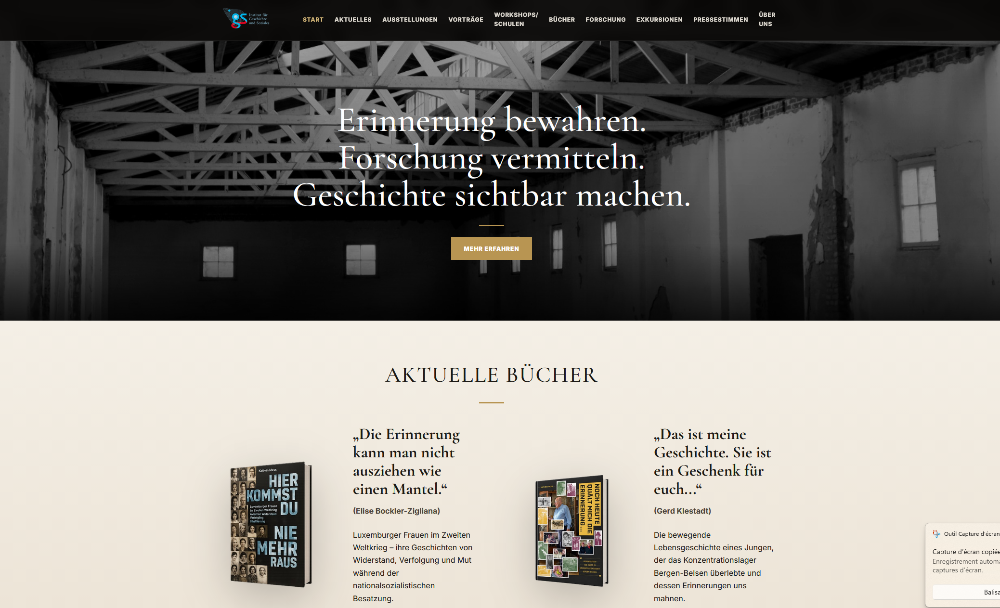

IGS Website
An ongoing client website project focused on creating a modern, responsive web presence around the organisation's specific content, services and visual identity.
Overview
The IGS Website is an ongoing web-design and development project created for a client who needed a modern and clearer online presence.
The website is being developed around the client's own content, activities and requirements rather than adapting a generic template.
The objective is to create a site that is visually coherent, easy to navigate and responsive across desktop, tablet and mobile devices.
Project details
The project involves designing the complete structure of the website around the information provided by the client.
Existing content is reorganised into a clearer navigation and page structure so visitors can quickly understand the organisation, its activities and the information relevant to them.
The visual design is being adapted specifically to the client's identity and preferences, including typography, spacing, imagery, content hierarchy and responsive behaviour.
Because the project is still in development, individual sections and page layouts continue to evolve as new content and client feedback are integrated.
Custom structure
The navigation and page hierarchy are designed specifically around the client's information and activities.
Client-specific content
Text, imagery and sections are integrated according to the organisation's actual communication needs.
Responsive design
The layout is adapted for desktop, tablet and mobile use rather than being designed only for a single screen size.
Visual consistency
Typography, spacing, imagery and page components follow a consistent design language across the site.
Iterative development
The website evolves through ongoing client feedback and adjustments to content and presentation.
Lightweight deployment
The project is designed as a lightweight web solution that can be maintained and updated without unnecessary complexity.
Technology
The IGS Website is developed using standard web technologies with a focus on simplicity, maintainability and responsive behaviour.
HTML provides the site structure, CSS defines the visual design and responsive layout, and JavaScript is used where interactive behaviour is required.
GitHub is used for version control and project development, providing a straightforward workflow for testing changes and maintaining the site as it evolves.